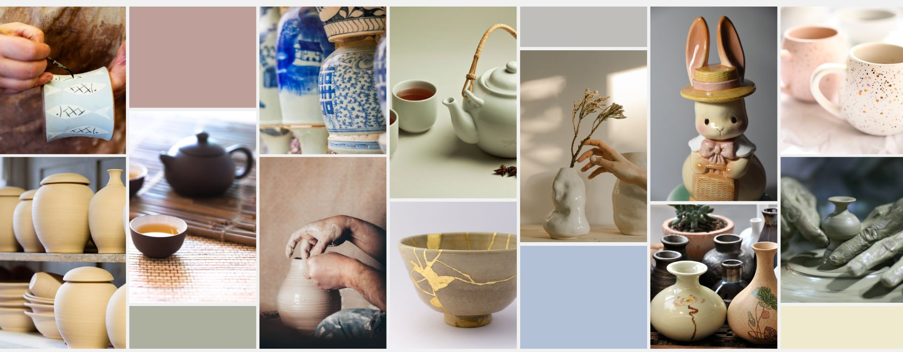

》》認識陶瓷
陶瓷器泛指以黏土塑形，再經過燒製成形的器物。陶器，一般用黏土或陶土，經捏製成形後燒製而成；瓷器則由瓷石、高嶺土等組成，外表施釉或經手工彩繪，高溫（約1200℃–1400℃）窯內燒製而成。一般會燒製兩次，第一次燒到 800 度，這次的燒製稱作「素燒」；出窯施釉後再進行第二次燒製，也就是俗稱的「釉燒」。陶瓷是陶器與瓷器的統稱，同時在歷史上也象徵一項工藝美術品的誕生與發展。
從外觀概略來分，陶器的原料是陶土，陶土含有鐵質且顏色為混雜而成，故多偏土色、土紅色。這樣的特性也使得陶器大多屬大地色系，就算施上白色的釉，依然呈現米白色，不會如同瓷器一樣白淨。這也就是為何陶器成品都自帶有一種古樸的美。
而瓷器的原料是瓷土，瓷土則是以高嶺土、長石、石英等礦物原料製作出來的，瓷器的燒製溫度比陶土來的高一些，透光性佳；一般使用瓷土製成的作品釉色明亮、燒製後的胎體也較細緻緊密。如同日常常見的那些瓷器，細膩明亮淨白。
【一、原料不同】
陶器的原料為黏土或陶土，瓷器則是使用瓷土、高嶺土做為原料製作出來的。高嶺土跟陶土最大的不同，就是富含較多長石、石英等一種含鋁的矽酸鹽礦物。
【二、燒製溫度】
陶器的燒製溫度大多落在 900～1,200度 之間，瓷器則通常落在 1,200度以上 的高溫燒製。簡單來說就是，瓷器的燒製溫度比陶器高。
【三、製作過程】
→ 陶器製作過程：練土（黏土）→成形→陰乾→素燒→裝飾→施釉→燒成→完成
→ 瓷器製作過程：練土（瓷土）→成形→陰乾→素燒→釉下彩→施釉→燒成→釉上彩→燒成→完成
【四、硬度不同】
因為原料和燒製溫度的差異，陶器的硬度會比瓷器來得差，有的甚至可以用鋼刀劃出溝痕。陶器坯體並未完全燒結，敲擊時聲音低沉，斷面吸水率高；瓷器的胎體堅固緻密，斷面基本不吸水，敲擊時聲音清脆。 陶瓷未燒前稱坯，坯燒成後就是胎。坯體進行素燒得到胎體，胎體經過雕刻裝飾、彩繪釉燒即成陶瓷成品。
【五、透明度】
瓷器都具有半透明的特色，陶器即便胎體再怎麼薄也不會具有透明度，例龍山文化的黑陶薄如蛋殼，但一點都不透明。瓷器的胎體無論薄厚，都具有半透明的特點。
【六、保溫性】
陶器雖然在結構上比較鬆散、氣孔較多，但也正因為富含了許多的氣孔，等於在器皿中有無數的空氣層隔絕了熱能的傳導，進而讓陶器的蓄熱性比瓷器來得更好，即使熄火後也能利用器皿本身的餘溫繼續加熱，讓食物料理端上桌後也能保持熱度。
＊資料來源https://tataga1.com/article-lifestyle-ceramics/